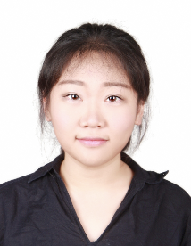
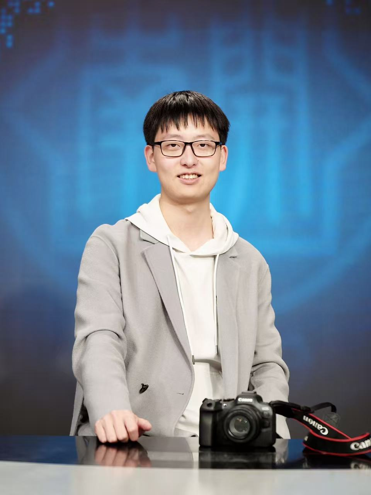

Foundations
Autumn 2026 · Ph.D. Course
Natural Language
Processing &
Large Language Models
Shenzhen Loop Area Institute
01 Course Overview
Understand the models
and why they fail
This course connects the core principles of modern NLP and foundation models with open-model practice and current research questions.
Classes combine paper discussions, practical demonstrations, and project-based learning. Students will analyze modern architectures, adapt models with current tools, and critically assess capability, reliability, safety, and evaluation.
01 Tokens & Embeddings
02 Transformers
03 Pretraining & Alignment
04 RAG & Agents
05 Reasoning & Evaluation
Prerequisites
Proficiency in Python and a foundation in linear algebra, probability, and machine learning. Experience with PyTorch or TensorFlow is strongly recommended.
02 Learning Outcomes
By the end of the course
From reading a paper
to designing an experiment
- 01
Explain the principles of modern NLP and LLMs, from traditional methods to Transformers and foundation models.
- 02
Analyze pretraining, scaling, instruction tuning, alignment, retrieval augmentation, reasoning, and agent frameworks.
- 03
Implement, adapt, and evaluate foundation models with modern toolkits and parameter-efficient methods.
- 04
Critically assess model capabilities, benchmarks, reliability, safety, and ethical considerations.
- 05
Design and conduct an independent research project in NLP, LLMs, multimodal foundation models, or trustworthy AI.
03 Weekly Schedule
15-Week Course Roadmap
Each stage builds the conceptual and experimental foundation for the next.
X. Quan
Representation
Text Representation, Tokenization, and Embeddings
Sequences
Neural Language Models and Sequence Modeling
Architecture
Attention Mechanisms and Transformer Architecture
Models
BERT, T5, and GPT Families
Training
Data, Objectives, and Scaling
Alignment
Fine-tuning, Instruction Learning, and Preference Alignment
Interaction
Prompting, In-context Learning, and Structured Generation
Knowledge
Retrieval-Augmented Generation and Knowledge-Enhanced LLMs
Agency
LLM Agents and Tool Use
Reasoning
Reasoning in Large Language Models
Evaluation
Evaluation of LLMs and LLM-based Systems
Frontiers
Guest Lectures and Emerging Topics
Projects
Group Project Presentations I
Projects
Group Project Presentations II
04 Course Format & Assessment
Weekly Class · 2 + 1
Build the concepts,
then test them in practice
Sessions 1–2
Concepts, theory, and representative open models
Session 3
Individual practice, observation, and discussion
75%Final Group Project
25%In-class Engagement
In-class engagement includes attendance, demonstrations, short tasks, questions, and discussion. Submitting the project alone is not sufficient for the highest grade.
05 Teaching Team
Teaching Team
The course brings together faculty and teaching assistants working across natural language processing, AI for science, and intelligent systems.
Full-time Professor · SLAI
Xiaojun Quan
Research interests include natural language processing, large language models, and speech LLMs. Ph.D. from City University of Hong Kong, with more than eight years at Sun Yat-sen University.
xiaojunquan@slai.edu.cn
Assistant Professor · SLAI
Zhengjun Yue
Research interests include speech and language technology for healthcare. Ph.D. from the University of Sheffield, with prior experience at Delft University of Technology.
zhengjunyue@slai.edu.cnTeaching Assistants
Research support, practical sessions, and course discussion

Shanghai Jiao Tong University · AI4SE
Yihang Xu
World Models, Interpretability, and Quantum Computing
250010001@slai.edu.cnSun Yat-sen University · EACV
Lang Zhou
LLM Reasoning Optimization and Memory Systems
250010021@slai.edu.cn06 Course Materials
Course Materials
Materials will be updated as the course progresses.
Recommended References
- Jurafsky & Martin, Speech and Language Processing, 3rd Edition draft
- Jay Alammar, Hands-On Large Language Models
- Hugging Face Transformers Documentation